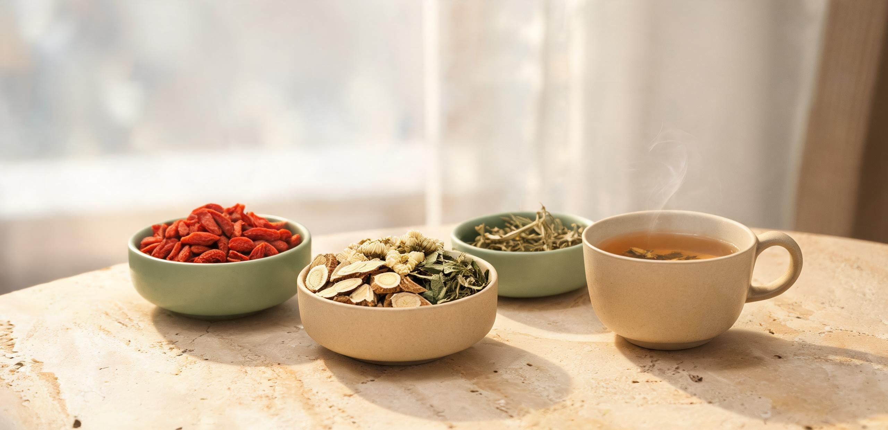

读懂指标
上传体检单或连续监测数据，系统识别关键箭头，并用一段人话解释它意味着什么，可能与你最近的哪些习惯有关。
- 血糖、血压与血脂的长期趋势
- 肝肾功能与用药安全性提示
- 异常值对应的下一步建议

华曼棠慢病智库 HUAMANTANG INSTITUTE · SINCE 2013
以循证医学为底，汇聚三甲临床专家与真实世界数据，为每一个长期用药的家庭，提供看得懂、做得到、跟得住的健康方案。
以证据为底 / EVIDENCE FIRST
十二年，我们只做一件事：把循证医学里冷峻的结论，翻译成普通家庭可以执行的语言。不夸大，不省略，也不替你做决定。
正在被管理的家庭
参与审校的临床专家
服务覆盖范围
循证研究积累
01 / 智库体系
智库不是资料的堆积。知识库提供依据，专家网络负责判断，陪伴工具把它落到每一天——三者交叉，才构成一个可以被信任的答案。
02 / 智库方法
指南写给医生，生活属于患者。我们站在两者之间，做那道并不容易的翻译：让复杂的医学，成为可以坚持的日常。
上传体检单或连续监测数据，系统识别关键箭头，并用一段人话解释它意味着什么，可能与你最近的哪些习惯有关。
把饮食、用药与运动安排进真实的一日三餐，而不是一张难以执行的清单。能坚持的方案，才是有效的方案。
每一次记录都会汇入长期趋势，帮助医生在复诊时看到完整的故事，而不只是一个孤立的数字。
03 / 知识库
不从头读一本教科书。从此刻最困扰你的那一个指标开始，每一篇都经学术委员会双周审校。
04 / 专家网络
内容署名，观点可溯。每一位专家的判断，都以真名出现在页面上；每一篇内容，至少经过三位临床专家交叉审校。
我们不替患者做决定，
我们让决定，变得有依据。
林叙白 · 学术委员会召集人
我们不使用“根治”“告别”这样的词。慢病管理的真相是长期、反复与不确定。我们相信，克制比煽动更接近医学。
05 / 研究洞察
指南更新、真实世界研究与临床观察，双周整理一次。只留下会对日常决策产生影响的改变。
开始 / BEGIN
把复杂的医学交给专业，把确定的生活留给自己。一次三十分钟的问询，从读懂你的指标开始。
健康顾问将在 24 小时内与你联系 · 不推销，不打扰